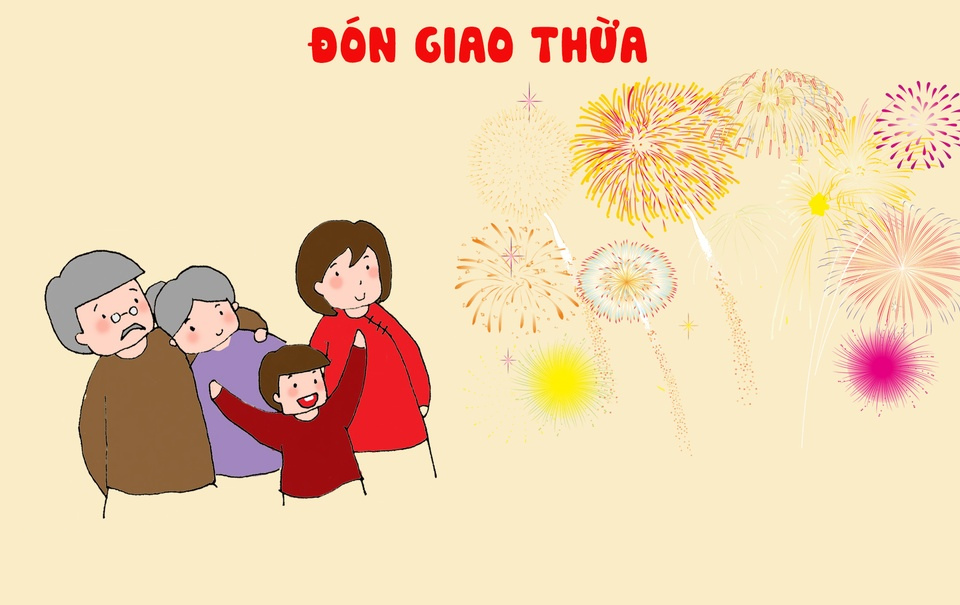
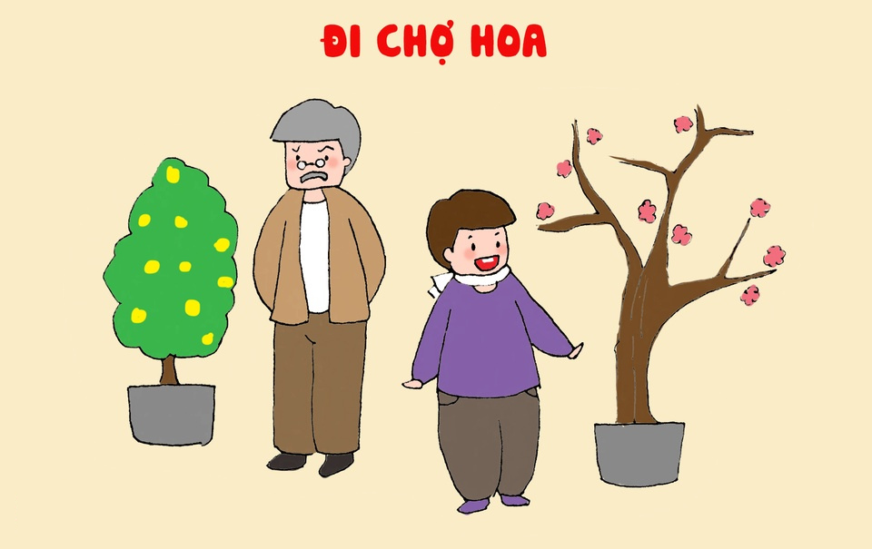
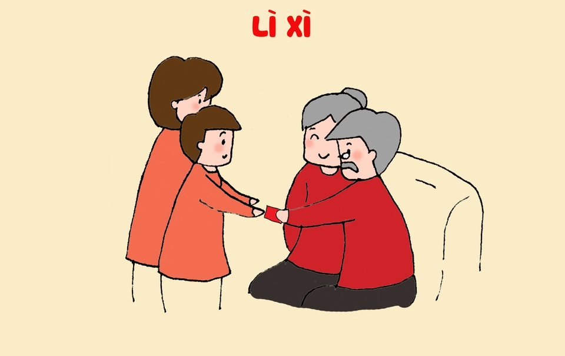
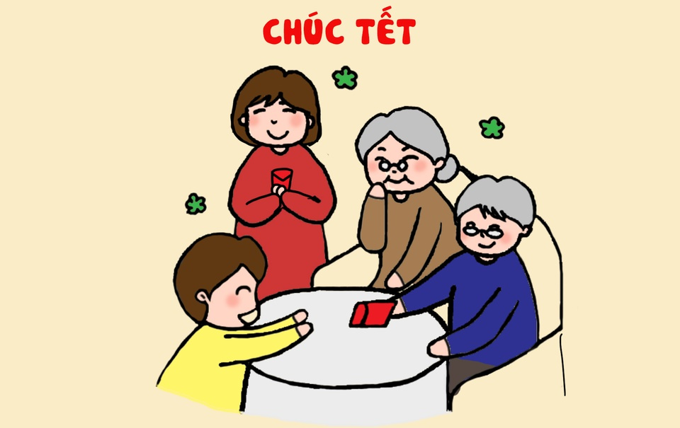
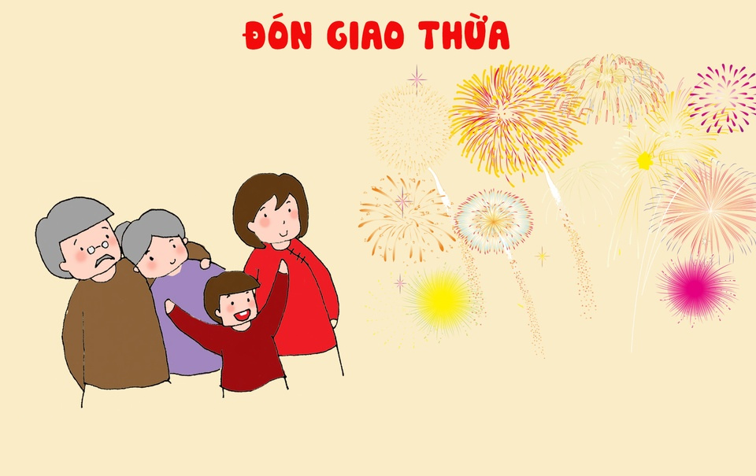
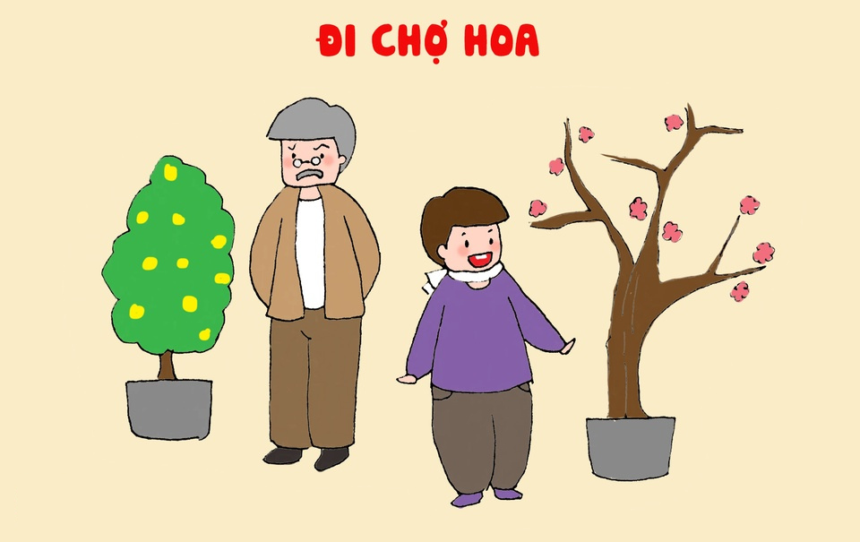
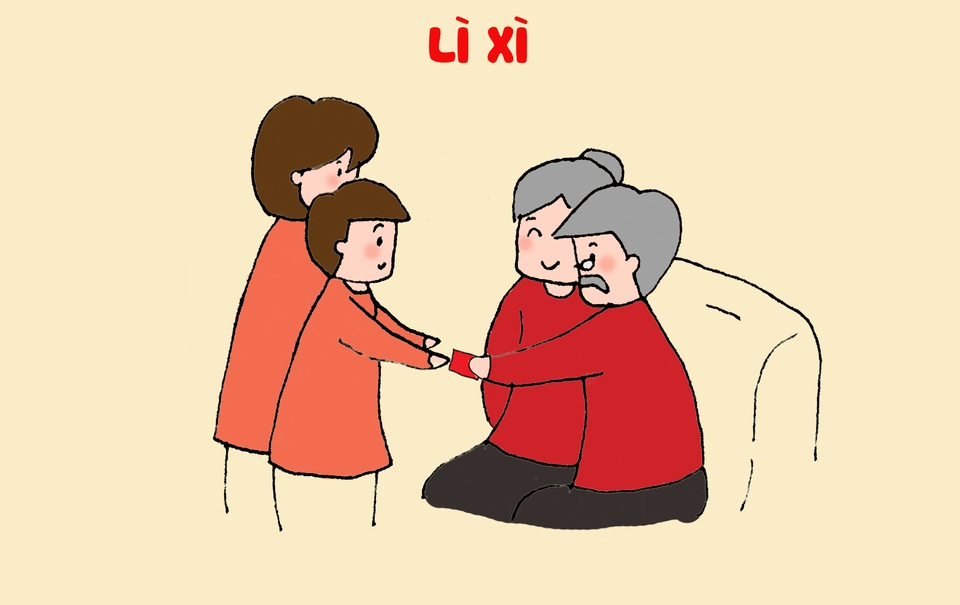
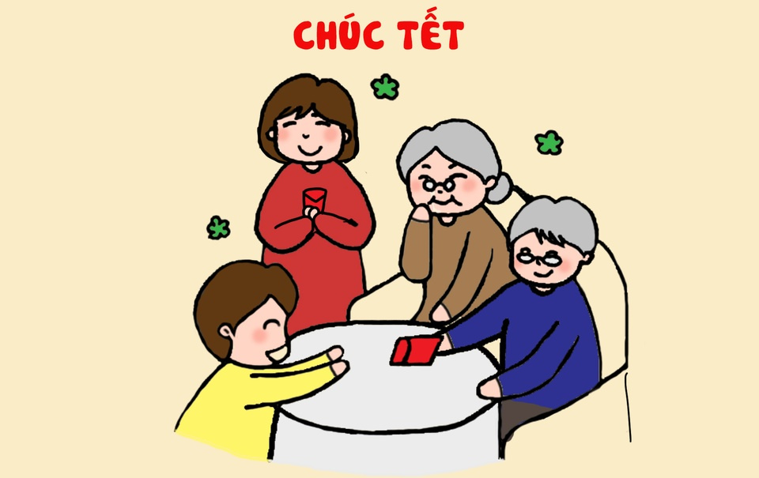

TẾT NGUYÊN ĐÁN
Tết Nguyên Đán là dịp lễ đầu năm mới theo âm lịch của các nước Đông Á như Trung Quốc, Đài Loan, bán đảo Triều Tiên, và các nước Đông Nam Á như Singapore, Malaysia, Indonesia và Việt Nam.Nguồn gốc ra đời
Năm mới của Việt Nam nói riêng và các nước Đông Á nói chung ảnh hưởng bởi nền văn minh lúa nước cổ đại.Theo nền văn minh nông nghiệp lúa nước, do nhu cầu canh tác nông nghiệp đã "phân chia" thời gian trong một năm thành 24 tiết khí khác nhau (và ứng với mỗi tiết này có một thời khắc "giao thừa") trong đó tiết quan trọng nhất là tiết khởi đầu của một chu kỳ canh tác, gieo trồng, tức là Tiết Nguyên Đán. Sau này được biết đến là Tết Nguyên Đán.
Chuẩn bị cho ngày Tết
- Trước Tết người dân đi sắm sửa đồ đạc cho năm mới.
- Miền Bắc trang trí hoa đào còn miền Nam lại sử dụng hoa mai biểu tượng cho ngày Tết.
- Chuẩn bị mâm ngũ quả, hoa, bánh kẹo, nước ngọt thờ cúng tổ tiên. Mâm ngũ quả mỗi miền lại có một cách bày trí khác nhau.
- Trẻ con được bố mẹ mua sắm quần áo, đồ dùng mới.


 






